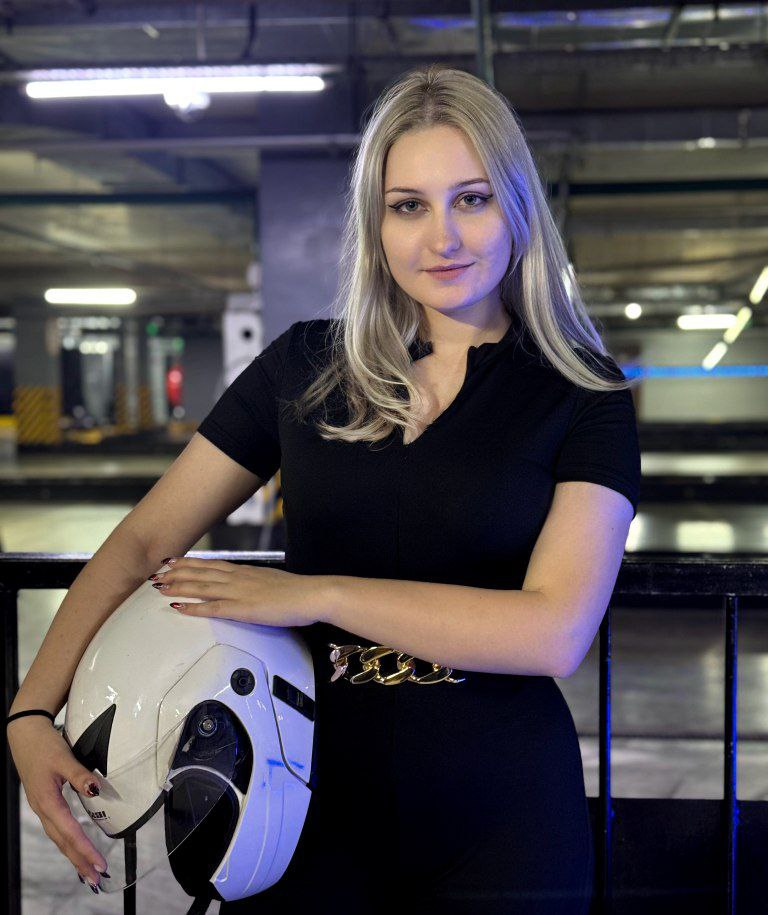
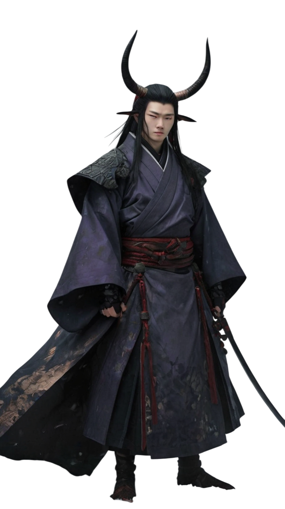

Я сценарист, увлеченный созданием интерактивных историй и игровых вселенных. Обладаю опытом разработки персонажей, сюжетов и диалогов. Стремлюсь развивать навыки в нарративном дизайне, так как это моя специализация.
Образование:
МФПУ «Синергия» – Геймдизайн (2023 – 2027)
ВКГТУ им. Д. Серикбаева – ИТ и ИИ (2023 – 2027)

Пример работы

Акихира Игараси
Имя | Фамилия: Акихира Игараси
Прозвище: Аки
Раса: О́ни
Возраст: 24 года
День рождения: 7 августа
Цифра семь считается счастливой, символизируя семерку пантеона богов в народе. Рождение Акихиры было благословением для семьи. Его знак зодиака — Лев, что отразилось на его гордом и своенравном характере.
Статус: «Самурай», «первый сын Сёгуна».
Предистория: Вследствие ужасного проступка вся человеческая сущность покинула Акихиру, раскрыв его демоническое начало.
══────══◌◦⌘◦◌══────══
Отрывок работы
Не дрогнула ни одна мышца, ни одна складка кожи не шелохнулась перед угрозами незнакомца – если их вообще можно было так назвать. Дух у него крепкий, но хватит ли ему опыта? Вот что поистине занимало рогатую голову о́ни
Взгляд, скрытый за демонической маской, словно рассекал воздух, а сама атмосфера начала сгущаться под его невидимым натиском. Он не нападал первым – кодекс чести не позволял. Но дать понять, что ему не указ, – обязан.
— «Люди… Все одинаковы. Черствые. Видят лишь оболочку.»
Руки, покрытые запекшейся кровью, с каждым днем темнели, словно угли, гаснущие под пеплом. Я убил его три дня назад… или меньше? Пять дней? Нет… вчера? Я потерял счет времени. Этот лес — тюрьма, сводящая с ума. Я хочу забыть. Все забыть.
— Разве не ты сам в этом виноват? Ты просто потакал своим желаниям.
Резкий, холодный бас, словно леденящяя вода, окунул сознание сумашествием, заставляя усомниться в реальности. Я был один. Тогда откуда исходил этот голос?
— Кто здесь?!
Крик утонул в вязкой тишине зимнего леса. Казалось, страх сам сгустился в воздухе, нависая надо мной. И тогда снова — этот демонический глас, хриплый, насмешливый:
— Ну же, дай волю мыслям. Ответь мне: зачем ты убил своего брата?
Звук исходил отовсюду и одновременно ниоткуда. Он обитал во мне: в моей голове, как змея, извиваясь, проникая в самые темные уголки сознания.
— Почему молчишь, убийца?
— ЗАТКНИСЬ! Ты ничего не знаешь!
Я закричал. Без цели – просто, чтобы заглушить этот голос, стереть его из своего разума. Но он не отступал. Он не мучил меня физически, но тело ломило, словно по моей душе прошлась катана.
— Я знаю многое. Просто ты слеп и не желаешь признать очевидное, мой юный убийца.
Я был бессилен. Это давило на меня. Мне стыдно признать, но в тот момент я хотел плакать. Закрыть уши, вырвать волосы, кричать, упасть и больше не вставать. Я зажал голову руками, отчаянно надеясь, что это спасет меня, но вместо тишины – острая боль и вкус крови во рту.
- Я убрал руки, коснулся горла. Что происходит? Почему мое тело больше мне не подчиняется?!
Мои собственные руки сжимали горло, с каждой секундой сильнее, крепче. Я не мог их остановить. Это был конец. Глаза перестали видеть что-либо, перед сознанием вспыхнул черный силуэт.
Он приблизился, коснулся моего подбородка и спросил с ледяным спокойствием:
— Почему ты убил своего брата?
Я знал ответ. Всегда знал. Но что-то мешало произнести его вслух.
Когда легкие наполнились огнем, а зрение начало тускнеть, я, задыхаясь, прошептал:
— …Зависть.
Существо…оно улыбнулось. Я почувствовал эту улыбку, как клеймо, выжженное в душе.
А затем прозвучал последний вопрос. Если бы я знал, как много он изменит, я бы предпочел умереть.
— Кто ты?
— Я – убийца.
А дальше была сплошная тьма, мне стало легче душой, однако пришло время для боли физической
Интересные факты из биография героя
Акихира избегает контактов с людьми, не желая никому причинять вред.
Обожает детей, ведь только они видят в нём то, чего не замечают другие.
Не переносит собак, ведь они первыми чуют его сущность.
Несмотря на жизнь в глуши, Акихира тщательно следит за чистотой.
Цель
Получение стажировки сценариста у вас! В Sinomi Games.